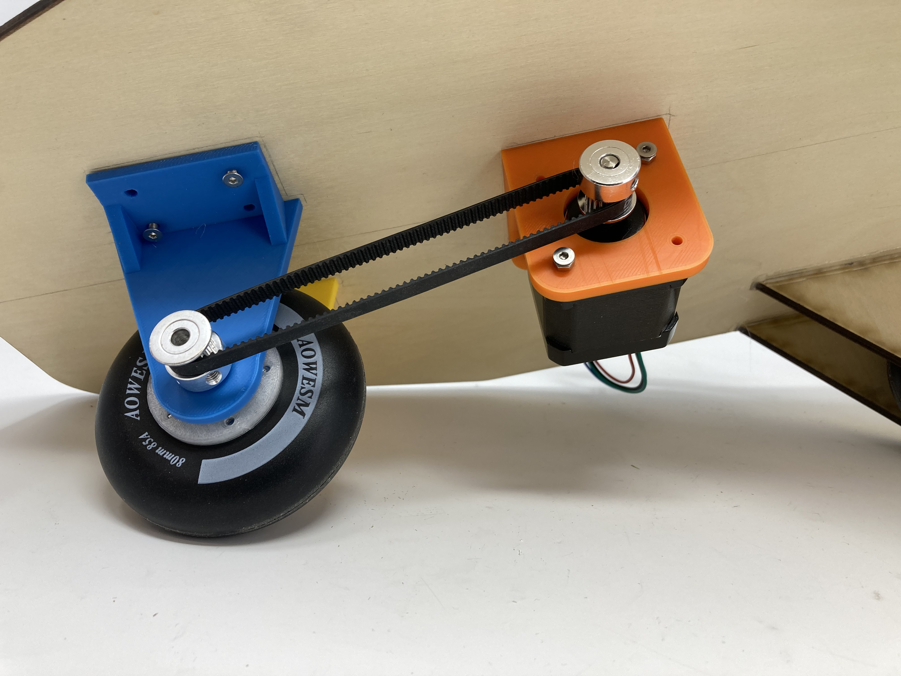
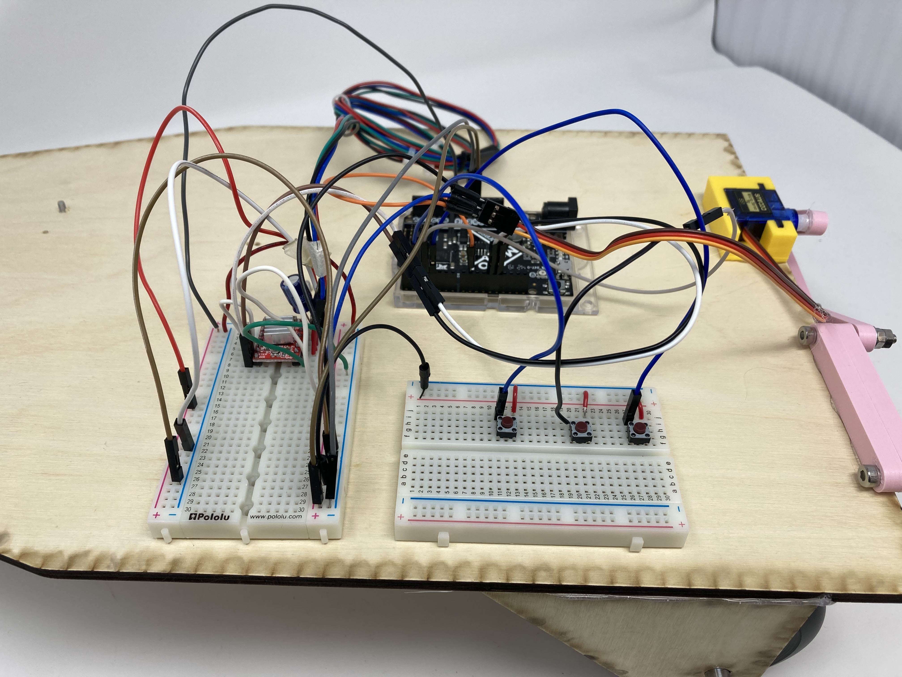

<br>
#### Week 6: Machine Building and End Effectors
For this assignment, I chose to learn how to use a NEMA-17 stepper motor. Initially, I paired the stepper motor with a L9110 motor driver. However, it was not suited to drive a stepper motor. I then used a A4988 chopper motor driver which worked a lot better and eliminated skipped steps. The A4988 driver also required 2 digital pins, while the L9110 configuration required 4. I calculated that in my final project, each foot of distance required the stepper motor to move 242 steps.
<br>
Here is my setup for the stepper motor on my final project.


Through experimentation, I tried various different power sources, ranging from 5V up to 15V. Ultimatley, 9V was enough to prevent any skipped steps (or perhaps it was due to the A4988 chopper driver).
And here is a [link](../index.html).